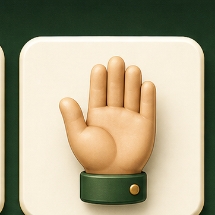
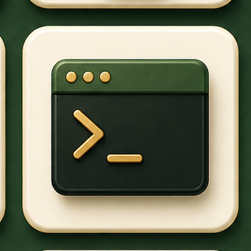
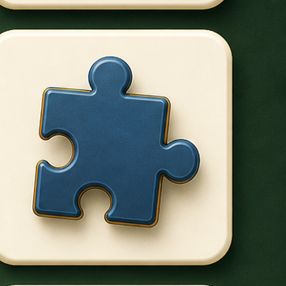
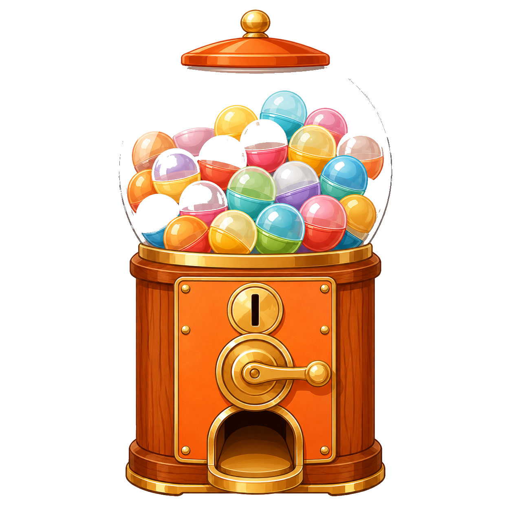
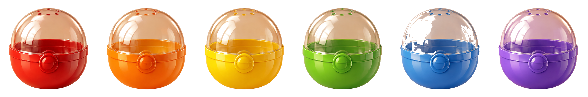
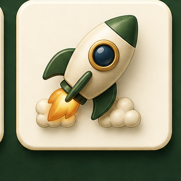

🌟 課程簡報
給會計師的 AI 程式入門 · 4 小時
按 → 或 空白 開始
CHAPTER 1
LLM = Large Language Model（大型語言模型）
Claude · GPT · Gemini · 都是
就像一個沒有手的顧問——
可以教你怎麼做，但摸不到你的滑鼠 🖱
IDE = 給 AI 大腦的一副身體

開檔 · 改檔 · 存檔

執行程式 · 跑指令
讀檔案 · 看截圖
邊做邊回報進度
| 情境 | 只有大腦 🧠 | 有手腳 🤖 |
|---|---|---|
| 做營業稅試算頁 | 給你一坨程式碼 你自己貼、存、開 |
建檔、寫好 打開瀏覽器 |
| 整理 30 張發票 | 教你 Python 語法 你還是不會弄 |
讀檔 重新命名 + 分類 |
| 讀 CSV 找異常 | 要你 把 1000 筆貼到對話框 |
自動分析 寫一份報告檔給你 |
章節 1 · 結論
CHAPTER 2
純文字 · 一個輸入框
多窗格 · 看得到檔案
差別不在「能做什麼」
而在「你看到什麼」 👁
一個輸入框 · 一條歷史紀錄 · 就這樣
跟它溝通只有一種方式：打字下指令
最強 · 最快 · 最自由
一個指令處理千個檔案
新手會嚇到
不知道發生了什麼
IDE 不是「比終端機強」，是「比終端機完整」
你的「桌面」
AI 改一行看一行
跟 AI 對話
內建在 IDE 裡
終端機是 IDE 的一部分，不是對立的東西。
| 能力 | 終端機 CLI | IDE 🌟 |
|---|---|---|
| 動本機檔案 | ✅ | ✅ |
| 跑指令 | ✅ | ✅ |
| 看到 AI 改了什麼 | ❌ | ✅ |
| 隨時插手修改 | ❌ | ✅ |
| 新手友善 | ❌ | ⭕ |
CHAPTER 3
現場示範環節
老師現場操作給你看
把 Claude 串進 Antigravity
你跟著做一次
每個人都要操作過
⚠️ 哪一步跟不上、跟我畫面不一樣 → 舉手，我們等你 🙋
CHAPTER 4
先讓 AI 動你的電腦
再來做小遊戲
Part A · 暖身
兩個小練習
讓 AI 親自告訴你它能做什麼。
📁 先做這 3 件事：
1. 把所有發票檔案放進一個資料夾（例：桌面/客戶A_發票）
2. 在 Antigravity 左側檔案區，開啟那個資料夾
3. 把下面 prompt 貼到 AI panel
Part B · 動手做
三選一
動畫 + 即時控制
想看 AI 做動的東西
邏輯 + 隱藏資訊
喜歡解謎
反應 + 計時
最快有成就感

桌面 · 哪個資料夾 · 什麼檔名
一句總結（例：經典貪吃蛇遊戲）
規則 · 視覺 · 互動 · 結束條件
用本地瀏覽器打開
這個結構你以後做任何東西都能套用 ✨
遊戲能玩，但有點醜——這是正常的
不用重做
AI 在原本檔案上繼續修改
看著它變漂亮
改一行看一行
這叫「迭代」
一次比一次好
在哪做 → 做什麼 → 需求清單 → 收尾
先做基礎版 → 再升級美術，不要一次想做完美
你要明確要，它才會給
這三件事 = 你之後做所有客戶頁面的核心邏輯 ✨
CHAPTER 5
不要下命令，要給脈絡
❌ 常見短指令
「幫我做試算表」 · 「寫個郵件」 · 「改一下」
✅ 你會對新同事說的話
「這是客戶資料表，欄位是 A、B、C，我要算 D。因為老闆下週要看，目的是檢查哪些客戶該續約。」
👤 你說：「幫我做個算稅的網頁」
🤔 AI 內心 OS
「算什麼稅？綜所稅？營業稅？營所稅？」
「給誰用？會計師？客戶？外行人？」
「要多複雜？單一公式還是含扣除額、扶養親屬？」
「介面要什麼風格？正式報表？卡通互動？」
「不知道...那我猜一個吧。」
↓ 產出：跟你心裡想的差 80%
角色 / 身分
AI 用對應專業度的語言
觀眾 / 客戶
介面要簡單還是專業
痛點
判斷哪些功能優先
成品想像
做完的標準
❌ 命令式 「幫我做一個算所得稅的網頁」
✅ 給脈絡式
我是會計師，常被客戶問綜所稅怎麼算。請做試算頁面給不懂稅務名詞的客戶用。
需求：輸入年收入、扶養人數 / 自動套用累進稅率 / 超大字級顯示應繳稅額 / 介面像 App 一樣簡單
❌ 命令式 「解釋一下營業稅」
✅ 給脈絡式
我是會計師，要做給小吃店老闆看的營業稅說明頁。老闆完全沒概念。
請用「買一個便當的金額怎麼分」當例子說明：5% 跑去哪 / 為什麼客人不用另外掏錢 / 跟收入有什麼關係
視覺要像漫畫，配色溫暖。
❌ 命令式 「改一下」/「再好看一點」
✅ 給脈絡式
剛才那個頁面客戶反映看不清楚，他們多半 60 歲以上。
請修改：主要數字放大到 48px / 改成黃底黑字（高對比） / 按鈕放大、間距拉開
玩法不變，只改視覺。
❌ 命令式 「做個讓客戶記住折舊的東西」
✅ 給脈絡式
我是會計師。客戶聽完當下說懂，回去就忘「折舊」。
請做讓客戶手動拖動的網頁：上方滑桿「使用年數」/ 下方滑桿「設備價值」/ 中間即時顯示每年折舊 + 殘值 / 介面溫暖不要像 Excel
| 以前你會說 | 之後請改成 |
|---|---|
| 「幫我做個 XX」 | 我是 ___，要做 XX 給 ___ 用，因為 ___ |
| 「再好看一點」 | 請改 ___，因為 ___，改成 ___ |
| 「重做一次」 | 保留 ___，但 ___ 改成 ___ |
| 「不對啦」 | 問題在 ___，預期 ___，實際 ___ |
CHAPTER 6
三個現場示範 · Prompt → 作品
痛點：助理 / 客戶看發票常漏掉錯誤，導致報稅退件。
痛點：客戶常搞不清楚要登記公司還是行號。
痛點：客戶問「我這個月要繳多少稅？」要解釋半天還聽不懂。
CHAPTER 7
不是讓客戶玩
是讓客戶記住
Part A · 心法
借用遊戲的「機制」，不是借用「形式」：
客戶知道走到哪
點下去就有反應
想分享給朋友
完成段落的滿足感
❌ 過度遊戲化的災難
· 動畫太多 → 忘記重點
· 彩蛋太密 → 抓不到主訊息
· 視覺太花 → 感覺不專業
以終為始 → 達成目的是最重要的 🎯
互動頁的「成功」標準不是好看，不是有趣——
真的懂了
客戶看完當下就會
不用重新解釋
下次來不用再講
會轉給朋友
客戶主動分享
「這個互動
讓客戶離答案更近、還是更遠？」
Part B · 解法
| 給客戶的 | 客戶反應 |
|---|---|
| 純文字 | 30 秒就放棄 |
| 純圖 | 看不懂專業術語 |
| 圖 + 文 + 動態 | 跟著節奏理解 🎯 |
人腦處理視覺比文字快 60,000 倍。
同一個概念「進項抵銷項」，三種呈現方式，客戶記住的比例完全不同。
| 學習方式 | 記住 |
|---|---|
| 只聽 | 5% |
| 只看 | 20% |
| 看 + 聽 | 50% |
| 動手做 ✨ | 75% |
| 教別人 🏆 | 90% |
設計甜蜜點：
「3 秒上手，10 秒玩明白」
科學原理：大腦對「預期之外的好事」會分泌多巴胺。
多巴胺 = 「想再做一次」+「會記住這次經驗」
撒花、發光、震動
完成跳折扣 / 知識卡
按 5 次跳秘密
「[名字]，你答對了！」
⚠️ 一個頁面 = 一個主要驚喜。少少給才珍貴。
就像 ATM 結束後跳出來的轉蛋——客戶只玩了 1 分鐘，也會印象深刻 ✨
小禮物只是「驚喜」
重點是意料之外
傳說禮物可以只是
「親手寫的祝福卡」
大多數人要的是
「抽到稀有」的感覺
點下方按鈕，體驗一個「客戶任務完成」的轉蛋示範 👇
基礎版用 emoji 已經能玩，但想做能商業使用、客戶會 wow的——照這 4 步走。
不用自己想 prompt
用 GPT / Midjourney
告訴 AI 用這些素材
AI 自動換掉
接下來 4 頁，一步一步看怎麼做 👉
告訴 AI 你要什麼，讓它幫你寫專業的圖像 prompt。
· 中文理解最好
· 一次能畫多張
· 風格穩定
適合會計師
· 美感最強
· 風格獨特
· 需要 Discord
適合追求美感
· Google 帳號就能用
· 免費
· 速度快
適合入門
💡 操作小撇步
· 一次貼一段（不要 8 張一起要，AI 會懶得每張都認真畫）
· 不滿意就重畫（同一個 prompt 多畫幾次選最好的）
· 記得寫「去背 PNG / 透明背景」（不然會有白底很難用）
畫好的 8 張圖長這樣 👇 把它們放進專案資料夾，然後告訴 AI「用這些素材」

機台

6 色膠囊
慶祝特效
N 普通
R 不錯
SR 稀有
SSR 史詩
UR 傳說
同一個轉蛋機，加了素材後質感完全不一樣 ✨
📌 流程總結：請 AI 給 prompt → 去 GPT 生圖 → 圖放資料夾 → 告訴 AI 用這些素材 → 完成 ✨
| 客戶情境 | 遊戲化程度 |
|---|---|
| 客戶要做嚴肅決定 | 🟢 低 — 重視專業感 |
| 客戶要學新觀念 | 🟡 中 — 互動引導 |
| 客戶要記住複雜概念 | 🔴 高 — 拖拉、即時試算 |
| 客戶在等待 / 打發時間 | 🔴 高 — 趣味為主 |
加遊戲元素前，問自己：
1. 客戶離目的更近還是更遠？
2. 拿掉這元素，客戶會錯過什麼？
3. 客戶第一次看到，被吸引還是嚇到？
CHAPTER 8
5 步驟法
老師說：「現在打開 Antigravity，做你自己的東西吧」
→ 腦袋一片空白
別擔心，有一個 5 步驟法 👇
從空白到初稿，只要 10 分鐘 ⏱
角色 / 身分 / 專業背景
解決什麼問題 / 給誰用
核心元素 + 留發揮空間
服務清單 / 收費表 / 案例
給 AI 看圖，比講話強 10 倍
| 寫法 | AI 以為的你 |
|---|---|
| 「我要做網頁」 | 學生？工程師？老闆？😵 |
| 「我是會計師」 | 會用會計專業語言 ✓ |
| 「我是執業 8 年的稅務顧問，主要服務中小企業」 | 知道深度、規模、客戶層 ✓✓✓ |
越具體越好 🎯
決定功能優先順序
· 讓客戶搞懂折舊
· 客戶申報前對帳
· 自我介紹頁
決定介面複雜度、字級、互動
· 年齡層
· 職業背景
· 手機 or 電腦
範例：目的是讓我的客戶（50 歲以上小吃店老闆、不會用電腦、用手機操作）搞懂他每月要繳多少營業稅。
| 寫多少 | 結果 |
|---|---|
| 不寫 | AI 自己猜，可能歪 |
| 寫了 | AI 精準產出 ✓ |
| 寫太多 | AI 沒空間發揮 |
✅ 剛剛好（核心 + 留空間）
「希望包含：輸入銷售額/進項額、即時顯示應納稅額、視覺要簡單。其他你覺得對的元素都可以加」
· 服務項目清單
· 收費表 / 報價單
· 案例 / 客戶見證
· 法規條文 / 公式
· 寫過的文案
AI 用你的真實資料
你只要校對
資料給 AI，文案它寫；你的工作是校對。
一開始不放沒關係：先做空殼，看 AI 怎麼設計，再補資料進去。
| 你說 | AI 理解 |
|---|---|
| 「現代簡約風」 | 太抽象 |
| 「溫暖一點」 | 多溫暖？ |
| 截一張圖給 AI 看 | 直接複製版面、配色、字體 ✓ |
看到好看就截圖 / IG / Pinterest / Dribbble
拖進 AI panel + 加一句「請參考這張圖的視覺風格」
先模仿，再變成自己的 🪞

瀏覽器、IG、Pinterest 找一個截下來
Step 1 角色 → Step 2 目的+客群 → Step 3 內容 → Step 4 資料 → Step 5 截圖
整段 prompt 貼進 Antigravity → 等它跑完 → 開出來 → 跟同學分享
章節 8 · 進階
網頁有了
圖怎麼放進去？
⚠️ 作圖一般用 AI 繪圖工具。目前美感最強：GPT 繪圖（gpt-image 系列）。
AI 變化快，重點學「流程」。
用 GPT 或其他 AI 工具
例：images/
logo.png · hero-banner.jpg
AI 自動放 + 打包推 GitHub
📌 回想章節 1：Antigravity 只是手腳，大腦可以自己選。
✅ GPT 大腦的優勢
· 內建繪圖（不用切換工具）· 畫完自動存檔 · 設計能力 + 美感比 Claude 強
用「公司 vs 行號配對遊戲」當示範。基礎版用 Claude 寫，再叫 GPT 升級美術。
💡 升級流程
1. GPT 畫 10 張卡片插畫 → 2. 放進 assets/cards/ → 3. 告訴 AI「換掉純文字卡片」→ 4. 刷新就變漂亮
嚴謹工程師
最會寫程式
理解能力最佳
美術藝術家
圖畫最好
美感最佳
整合系統
Google 整合最方便
最便宜
| 能力 | 排序 |
|---|---|
| 美術 / 設計 | GPT >>> Gemini > Claude |
| 程式 / 邏輯 | Claude > GPT >>> Gemini |
| 串聯生態系 | Gemini > Claude = GPT |
LINE 點一下就能看
修改即時更新
完全免費
📝 提醒：倉庫名英文小寫+連字號（例 tax-calc） · 等 1~2 分鐘佈署完成
| 限制 | 怎麼辦 |
|---|---|
| ⚠️ 倉庫公開 | 不要放客戶資料、密碼、API key |
| ⚠️ 只能靜態網頁 | 表單存資料、帳密登入做不到 |
| ⚠️ 網址不專業 | 商業正式用自己買網域 |
| ⚠️ 更新有延遲 | 等 1~2 分鐘 |
教學頁、試算工具、自我介紹
帳密登入、表單存資料、含個資
章節 8 · 進階
| 平台 | 後端 | 特色 |
|---|---|---|
| GitHub Pages | ❌ | 最簡單、最熟悉 |
| Vercel ⭐ | ✅ | 免費額度大、最受歡迎 |
| Netlify | ✅ | 老牌穩定、表單內建 |
| Cloudflare Pages | ✅ | 全球 CDN 最快 |
| Firebase Hosting | ✅✅ | Google 全套服務 |
· 純展示頁 → GitHub Pages · 加表單收資料 → Vercel · 全套服務 → Firebase
用 Excel 比喻：
· Excel = 一個檔案，開啟、編輯、關閉
· 資料庫 = 「永遠開著」的 Excel，多人同時看同時改
| 你想做的事 | 要資料庫？ |
|---|---|
| 純試算工具 | ❌ |
| 純展示頁 | ❌ |
| 客戶填表單，你之後要回看 | ✅ |
| 客戶登入查自己的資料 | ✅ |
| 工具 | 像什麼 | 難度 |
|---|---|---|
| Google Sheets | 試算表當資料庫 | 🟢 最低 |
| Airtable | 升級版試算表 | 🟡 中 |
| Supabase | 真資料庫 + 認證 | 🟠 中高 |
| Firebase Firestore | Google 全套後端 | 🟠 中高 |
學習順序：Google Sheets → Airtable → Supabase
| 想做的事 | 平台 | 資料庫 |
|---|---|---|
| 純展示 | GitHub Pages | 不用 |
| 給客戶玩的試算 | GitHub Pages | 不用 |
| 客戶填表單，我收到 | Vercel | Google Sheets |
| 客戶填表單，客戶回查 | Vercel | Airtable |
| 客戶登入查財報 | Vercel | Supabase |
章節 8 · 必看
會計師用 AI 做客戶資料 App 前
先看這節
🔐 你處理的是「高敏感資料」
出事 = 法律 + 信譽 + 賠錢 💸
⚠️ 最危險的——不是你不會的事，是
「你不知道你不會的事」
| # | 災難 | 會發生 |
|---|---|---|
| 1 | API Key 外洩 | 推上 GitHub → 被偷用 → 帳單爆表 |
| 2 | 資料庫權限沒設 | 全世界看得到客戶資料 |
| 3 | 敏感檔推 GitHub | Google 搜得到 .env、客戶 Excel |
| 4 | XSS 攻擊 | 客戶輸入被當程式執行 |
| 5 | 沒備份 | 客戶資料永遠不見 |
身分證 / 銀行帳號 / 健保
→ 找專業工程師
含客戶資料的專案
絕對不能 Public
真實資料等正式上線後
才進去
告訴 AI：用 .env
加進 .gitignore
| 想做的事 | 該不該 |
|---|---|
| 給客戶看的純展示頁、教學頁 | ✅ 可以 |
| 給客戶玩的試算工具（不存資料） | ✅ 可以 |
| 內部客戶名單 + 連絡資訊 | ⚠️ Private + Airtable |
| 客戶填表單寄給你 | ⚠️ Vercel + Google Sheets |
| 客戶帳密登入查財報 | 🔴 找工程師 |
| 客戶上傳身分證 | 🔴 找工程師 |
CHAPTER 9
從「會用」到「用得久、用得好」
你跟 AI 是工作夥伴。事情交給 AI 沒問題——但你必須知道 AI 怎麼工作的。
⚠️ AI 常見的「歪掉」三種狀況
· 繞路：做了你沒要他做的事
· 不夠了解而做錯：以為你要 A 結果做了 B
· 用複雜解法忽略簡單做法：一個 if 能解決的事，他寫 50 行
你的工作：看著它做 · 不對勁就出手干預 · 慢慢知道什麼要管什麼不用
信任 ≠ 放任。信任 = 知道對方在做什麼 🔍
把「要自己動手」的事情習慣性丟給 AI。
🎯 只要 AI 要你做，先問這三句
1. 「你能幫我做嗎？」
2. 「需要什麼權限？」
3. 「為什麼你不行？」
💡 設定過一次，以後完全不用你動手。
例：第一次設好 Google Sheets API → 之後叫 AI 一句話就搞定。
現在的麻煩 = 為了以後更順暢 ⚙️
❌ 沒 SKILL 的痛苦
每個月都要打：「請整理發票成表格，欄位要有日期、廠商...」
越打越懶，最後乾脆不用 😩
💡 SKILL = 把工作流程「存起來」
📌 第一次做完，告訴 AI：
「請幫我把這份工作流程
做成 SKILL」
⚡ 下次只要說：
「幫我整理客戶發票」
AI 按上次流程處理，連你踩過的雷也會記得 🎯
教 AI 一次，省一輩子 ✨
CHAPTER 10
你已經會了
接下來去做。
與 AI 工作是一件需要長期習慣的事情。
剛開始時你可能要花很多時間跟 AI 溝通、彼此熟悉， 你會覺得 AI 難用、做得比你想的差—— 但很多時候，改變一下溝通方式就會差很多。
AI 時代，
知識不再是阻礙你前進的原因，
耐心與如何跨出舒適圈，才是。
CHAPTER 11 · 補充
未來做進階 App 時會碰到的概念
🔑 直接想成「鑰匙」
你跟服務商註冊後，他給你一把鑰匙。
你的程式拿著這把鑰匙，才能進去使用服務。
⚠️ 鑰匙不見了 = 別人能用你的身分進去花你的錢。
| 服務類型 | 什麼時候需要 |
|---|---|
| 🤖 第三方 AI | 讓 App 自己呼叫 AI（OpenAI / Anthropic） |
| 💾 雲端資料庫 | 程式要讀寫資料（Supabase / Firebase） |
| 🗺️ 地圖服務 | 網頁顯示地圖（Google Maps） |
| 💳 金流服務 | 網頁要收錢（LINE Pay / Stripe） |
| 📨 通訊服務 | 自動發 LINE / Email |
當你學會讓 AI 代替你在電腦上工作時，是不是會想——他跟現實裡的人類助理差在哪裡？
🚧 目前的限制
🧑 你 → ⚡ 指令 → 🤖 AI → ⚙️ 動作
大多時候 AI 還是要你發指令才會動
💭 那要怎麼讓 AI 不用你發指令也能工作？
與 AI 協作就是不停的腦力激盪——下面兩種方法
時間到就工作
狀態變了就工作
設定一個程式，定時代替你去發指令叫 AI 工作。
🗓 範例：我設定一個「AI 鬧鐘排程」
💡 重點：AI 有思考能力，可以派需要思考的任務給他。
例：每天想一件能優化你工作的流程並提案
從此 AI 就像活了——
這個鬧鐘就是 AI 的「心臟」❤️
不靠鬧鐘定時，靠某個狀態被改變來觸發 AI 工作。
🔄 運作流程
📁 某個地方狀態改變
↓
📡 程式偵測到，通知 AI
↓
🤖 AI 開始工作
📦 範例：監測雲端資料夾
把程式裝在監測某個 Google Drive 資料夾——
從此只要那個資料夾有新檔案進來，程式就會通知 AI：「該工作囉！」
→ 例：客戶把月結發票丟進資料夾 → AI 自動整理 → email 摘要給你
| ⏰ 定時觸發型 | 📁 任務觸發型 | |
|---|---|---|
| 機制 | 時間到就做 | 狀態改變才做 |
| 適合 | 例行性日常工作 每天每週都會做的事 | 不定期但有規律事件 客戶送資料、收信、有人預約 |
| 會計師例子 | 每月 5 號自動整理上月發票 每週一彙整客戶 LINE 問題 | 客戶上傳憑證 → 自動分類 email 來新詢價 → 自動草擬回信 |
💡 兩種其實可以同時用
⏰ 定時掃描 + 📁 即時觸發 = 真正的 AI 助理系統
Antigravity 內建 AI 是「給你用」，幫你寫程式、改檔案。
如果要做 App 讓客戶自己跟 AI 對話（例：稅務問答機器人），就要申請 API Key。
自動回稅務問題
給文件找錯字
客戶 email / LINE
報告、報價單草稿
💰 按使用量計費。用得多付得多——所以鑰匙被偷 = 別人花你的錢。
| 程式機器人 | AI 機器人 | 混合型 ⭐ | |
|---|---|---|---|
| 怎麼做 | 預寫答案 + 關鍵字 | LLM 自由生成 | AI 判斷 → 程式答 |
| ✅ 優點 | 可控 · 便宜 · 不會錯 | 聰明 · 自然 | 穩定 + 聰明 + 便宜 |
| ❌ 缺點 | 很笨 · 冷漠 | 會幻覺· 貴 | 開發較複雜 |
⭐ 給會計師：選混合型
· AI 負責「聽懂」客戶問什麼 · 程式負責「答對」標準答案 · 不確定 → 轉接給人類
⚠️ 純 AI 風險：客戶問「我這月稅多少」，AI 可能編一個假數字。會計師絕對不能允許。
去做吧，回來分享你的作品。